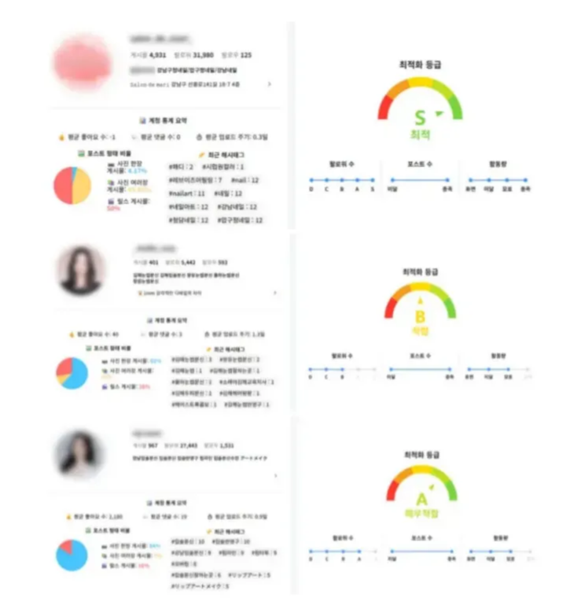

스탭 - 자사 계정 중심의 노출 전략 패키지

서비스 개요
2025 현재 인스타그램 노출 구조는 추천탭 기반의 로테이션(롤링) 노출 방식으로 전환되었습니다. 이 변화로 인해 광고주 계정에서의 주기적인 업로드와 노출 작업 병행을 통한 누적 노출이 훨씬 더 중요해졌습니다.
특히 광고주 계정으로 직접 노출이 이루어지는 경우, 실제 문의 발생률 및 매출 전환률이 높게 나타나고 있어, 자사 계정 중심의 노출 전략의 필요성이 더욱 높아지고 있습니다.
노출 원리 이해를 돕는 영상
인스타그램 검색 결과가 다른 이유
인스타그램 검색 결과는 사용자마다 다르게 나타납니다. 계정의 활동 이력, 관심사, 인게지먼트 패턴에 따라 알고리즘이 개인화된 결과를 제공하기 때문입니다.
시기별 노출 검색 결과
게시물의 업로드 시기와 노출 타이밍에 따라 검색 결과 순위가 달라집니다. 최신 업로드와 지속적인 작업 병행이 중요한 이유입니다.
콘텐츠별 로테이션 검색 결과
추천탭은 단일 콘텐츠가 고정되는 방식이 아닌, 여러 콘텐츠가 롤링되는 로테이션 방식으로 운영됩니다. 다양한 콘텐츠를 주기적으로 업로드하는 것이 노출 기회를 극대화합니다.
서비스 안내 - 자사 계정 중심의 노출 전략
해당 서비스는 정해진 예산 내에서 최대한 다양한 방식으로 계정 세팅 + 릴스 확산 + 게시물의 추천탭 노출이 유기적으로 연결되어, 중·장기적으로 최대 성과를 낼 수 있도록 설계된 3개월 패키지입니다.
1개월차에는 계정의 최적화 세팅 및 기반 노출을 위한 구조를 구축하고, 2~3개월차부터는 릴스 콘텐츠와 계정 자체가 추천탭 및 검색 노출에 본격적으로 등장할 수 있도록 설계된 구성입니다.
Step 1 - 1개월차: 활동량 충족 및 릴스 확산 기회 확보
추천탭 및 계정탭에서 계정의 원활한 노출을 위한 활동량 충족을 목표로 최적화 작업을 진행합니다. 또한 계정에 세팅된 알고리즘 전용 팔로워는 팔로워 충족과 더불어 릴스 부스팅 작업 시 반응활동을 통한 내부 인게지먼트가 상승하여, 노출에 필요한 활동량을 보다 빠르게 충족할 수 있도록 돕습니다.
좋은 반응을 얻어 검색 결과에서 상단 노출되고 있는 경쟁사의 콘텐츠를 참고하며, 주 1회 릴스 업로드 후 인사이트 반응 지표를 통해 콘텐츠의 개선점을 파악해가는 시기입니다.
노출 테스트는 최적화 작업 종료 후 '내 게시물 노출 작업'과 동일한 작업으로 진행되며, 누적 게시물 수 50만 이하의 다양한 키워드를 사용하여 해당 계정의 노출 적합 여부를 체크합니다.
| 항목 | 작업 일/수 | 판매가 |
|---|---|---|
| 최적화 작업 · 자동활동 | 30일 | 150,000 |
| 릴스 알고리즘 부스팅 팔로워 세팅 | 1,000명 | 120,000 |
| 릴스 알고리즘 부스팅 작업 | 4회 | 80,000 |
| 노출 테스트 | 1회 | 12,000 |
| 합계 | 362,000 | |
| 할인 적용 금액 (Vat 별도) | 300,000 |
Step 2 - 2개월차: 주기적인 업로드와 작업 병행
주 2회 이상의 게시물 업로드를 목표로 릴스 부스팅 작업과 노출 작업을 병행합니다. 이는 내외부 모두에서 인게지먼트가 상승하여 계정 지수에도 좋은 영향을 미치며, 릴스의 확산과 추천탭에서의 노출 기회를 확보합니다.
| 항목 | 작업 일/수 | 판매가 |
|---|---|---|
| 최적화 작업 · 자동활동 | 30일 | 150,000 |
| 릴스 알고리즘 부스팅 작업 | 8회 | 160,000 |
| 내 게시물 상위 노출 작업 | 4회 | 48,000 |
| 노출 테스트 | 1회 | 12,000 |
| 합계 | 370,000 | |
| 할인 적용 금액 (Vat 별도) | 300,000 |
Step 3 - 3개월차: 인스타그램 내 모든 영역에서의 노출 기회 확보
2개월차 종료 시점 노출 테스트를 통해 노출 적합 여부 판단 후 3개월차 작업을 진행합니다. 이 시점부터는 최적화 작업 · 라이트 슬롯을 통해 일정 활동량을 유지시키며 활동량 저하로 인한 노출도 저하를 방지할 수 있습니다.
또한, 릴스 확산 + 추천탭 + 계정탭까지 정해진 예산 내에서 인스타그램의 모든 영역에서 노출 기회를 확보할 수 있습니다.
'계정탭 상위 노출 · 자동완성어' 작업은 해당 키워드가 과경쟁 상태일 경우 5위권 이내 진입에 필요한 최소 슬롯 갯수가 증가할 수 있으며, 안내드린 권장 슬롯 갯수 미만으로 진행하시게 될 경우 순위 상승이 원활하지 않을 수 있으니 꼭 확인 후 진행 부탁드립니다.
과경쟁 키워드 권장 슬롯 예시
- #입술문신 - 7개의 업체에서 평균 4슬롯 이상 사용중, 권장슬롯 = 5슬롯
- #강남맛집 - 8개의 업체에서 평균 5슬롯 이상 사용중, 권장슬롯 = 6슬롯
| 항목 | 작업 일/수 | 판매가 |
|---|---|---|
| 최적화 작업 · 자동활동 (라이트) | 30일 | 60,000 |
| 계정탭 상위 노출 · 자동완성어 | 30일 / 1슬롯 | 150,000 |
| 릴스 알고리즘 부스팅 작업 | 8회 | 160,000 |
| 내 게시물 상위 노출 작업 | 4회 | 48,000 |
| 합계 | 418,000 | |
| 할인 적용 금액 (Vat 별도) | 330,000 |
참고) 최적화 슬롯과 라이트 슬롯의 차이
최적화 슬롯의 일부 기능만 제공되는 '라이트 슬롯'
라이트 슬롯 : 기존 팔로잉 중인 사용자들과의 소통활동을 통한 활동량 증가 및 저하 방지
| 작업 항목 | 최적화 슬롯 | 라이트 슬롯 |
|---|---|---|
| 해시태그 탐색 | O | X |
| 계정 탐색 | O | X |
| 계정 방문 | O | X |
| 팔로우 | O | X |
| 언팔로우 | O | X |
| 게시물 보기 + 좋아요 누르기 | O | O |
| 스토리 보기 + 좋아요 누르기 | O | O |
| 품앗이 | O | O |

작업 프로세스
계정의 전반적인 상태 진단
키워드 수립
업종과 판매 상품에 적합한 키워드 탐색, 목표 키워드의 경쟁도 파악
작업 진행 전 필수 설정
2차인증 해제, 프로패셔널 계정 전환, 검토를 위해 플래그 지정 OFF, 계정 언급 및 태그 ON
최적화 작업에 필요한 필수 정보 전달
(구글폼) 최적화 작업 신청서 작성
결제 및 작업 진행
작업 방식 - 자동 작업 진행
인스타그램의 알고리즘은 초기 반응이 활발한 게시물을 더 많은 사람에게 확산시키는 구조입니다. 따라서, 모든 작업은 광고주님의 계정에서 새로운 게시물이 업로드되면 자동으로 작업이 진행되며, 별도의 링크 전달없이 편리하게 이용하실 수 있습니다.
특정 게시물에만 작업을 원하실 경우 업로드 예정 날짜, 요일 등 세부적인 조율이 가능합니다.
유의 사항
활동량 준수
과도한 단기 활동은 매크로나 봇으로 간주되어 쉐도우밴의 위험이 있습니다.
특히 개설된 지 3개월 미만인 신규 계정의 경우, 이상 행위 감지 시스템이 더욱 엄격히 적용됩니다.
- 게시물 업로드는 하루 최대 1회로 제한하시길 권장드립니다.
- 광고주님의 직접 활동은 최소화하는 것이 안전합니다.
- 게시물 업로드와 DM 답변을 제외한 좋아요, 댓글, 팔로우, 콘텐츠 시청 등의 활동을 자제해 주세요.
다수의 기기에서 로그인 금지
여러 기기에서 동시에 하나의 계정에 로그인하면 계정 차단이나 정지될 위험이 높아집니다.
이에 작업 기간에는 한 기기에서만 계정을 사용해주시는 것이 안전합니다.
안전한 작업을 위해 계정 사용 후 꼭 로그아웃 해주세요.
2차인증 해제
프로그램과 연동되어 작업이 진행되기 때문에 2차인증이 걸려 있을 경우 작업이 불가합니다.
설정 → 보안 → 2단계 인증 → 비활성화
아이디 및 비밀번호 변경 금지
변경이 불가피한 경우에는 반드시 변경된 정보를 전달해주세요.
인스타그램의 검증 방식
최적화 작업 중 광고주님의 직접 활동시간이 길어질 경우, 인스타그램에서 동시 접속으로 인식될 수 있습니다. 이러한 경우 비정상적인 활동으로 감지되어 계정 보호 시스템으로 계정이 일시적으로 잠길 수 있으나, 간단한 인증 절차를 통해 해제가 가능합니다.
보안
수집된 정보는 효과적인 타깃 선정을 위해 활용되며, 계정 아이디와 비밀번호 등 보안에 민감한 정보는 계약 종료 시 안전하게 폐기됩니다.
본 서비스는 인스타그램 상위 노출 및 확산 가능성을 높이기 위한 작업으로, 실시간 노출이나 일정 수치의 결과를 보장하지 않습니다.
생성한지 3개월 미만의 신규 계정 혹은 장기간 활동이 없었던 일반 계정일 경우 아무리 퀄리티 높은 콘텐츠라도 노출과 확산이 원활하지 않을 수 있습니다. 지속적인 업로드와 작업 병행을 권장드립니다.
알고리즘 부스팅 전용 팔로워는 알고리즘 최적화를 목적으로 구성된 한국인 계정들로 세팅되어 있습니다. 따라서 해당 팔로워를 구매하더라도 계정에 불이익이 전혀 발생하지 않으며, 인스타그램 인사이트에도 자연스럽고 안정적으로 반영됩니다. 일반적으로 문제가 발생하는 경우는 비정상적인 외국인 팔로워나 저품질 계정을 대량 구매했을 때이며, 당사에서 제공하는 전용 팔로워는 이러한 방식과는 전혀 다릅니다.
알고리즘 부스팅 작업을 통해 인위적으로 증가되는 조회수는 최대 1,000회까지이며, 팔로워의 초기 반응을 기반으로 인스타그램 알고리즘이 콘텐츠를 '확산 대상'으로 판단하게 됩니다. 이후에는 자연 확산이 시작되며 평균적으로 약 5,000 ~ 15,000 조회수까지 도달하는 경우가 많습니다.
자연 확산 조회수는 계정 상태에 따라 달라질 수 있으며, 기존 팔로워 수, 릴스 업로드 이력, 평균 시청 시간 등 다양한 요소에 따라 차이가 발생합니다. 진행 사례 중 단일 릴스 기준으로 800만 조회수까지 증가한 케이스도 있으며, 영상 퀄리티가 높거나 활용한 해시태그가 잘 맞을 경우, 더 높은 조회수도 충분히 나올 수 있습니다.
- 1,000명 전용 상품 : 평균 1~2만 회
- 3,000명 전용 상품 : 평균 2~4만 회
- 5,000명 전용 상품 : 평균 3~7만 회
서비스 문의 및 상담은 아래 카카오 채널을 이용해주세요.
카카오 채널 상담하기